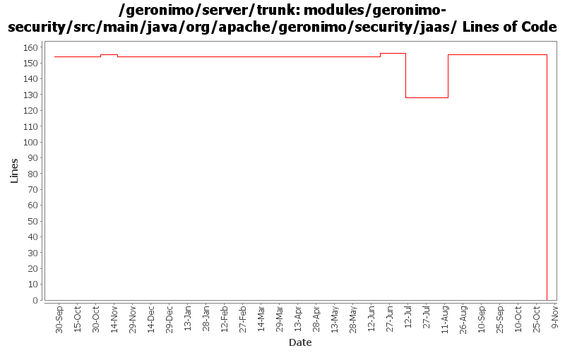

[root]/modules/geronimo-security/src/main/java/org/apache/geronimo/security/jaas
 client
(0 files, 0 lines)
client
(0 files, 0 lines)
 server
(0 files, 0 lines)
server
(0 files, 0 lines)

| Author | Changes | Lines of Code | Lines per Change |
|---|---|---|---|
| Totals | 74 (100.0%) | 173 (100.0%) | 2.3 |
| djencks | 14 (18.9%) | 162 (93.6%) | 11.5 |
| jlaskowski | 1 (1.4%) | 6 (3.5%) | 6.0 |
| kevan | 36 (48.6%) | 3 (1.7%) | 0.0 |
| akulshreshtha | 2 (2.7%) | 2 (1.2%) | 1.0 |
| prasad | 19 (25.7%) | 0 (0.0%) | 0.0 |
| adc | 2 (2.7%) | 0 (0.0%) | 0.0 |
GERONIMO-3565. Modules distributed amongst framework/modules and plugins
0 lines of code changed in 19 files:
GERONIMO-3407 Try this one more time... Insure that we don't unintentionally cause a login to succeed. Correct login logic in some test cases
1 lines of code changed in 1 file:
GERONIMO-3407 revert unintended changes
1 lines of code changed in 1 file:
GERONIMO-3407 a few more changes
1 lines of code changed in 1 file:
GERONIMO-3404 GERONIMO-3406 Fix the return values from login module lifecycle methods and add some javadoc and a little code cleanup
85 lines of code changed in 4 files:
GERONIMO-3303 Major simplification of authentication framework. Removes remote login and supporting code
73 lines of code changed in 9 files:
GERONIMO-3083 fix j2ca container managed security
4 lines of code changed in 1 file:
GERONIMO-2607 reverted 485524
1 lines of code changed in 1 file:
GERGERONIMO-2607 Updated all GBeans to use new GBeanInfoBuilder.addOperation(..) method
1 lines of code changed in 1 file:
GERONIMO-2537 Update the src headers in server/trunk/modules to be compliant with the new ASF src header and copyright policy (http://www.apache.org/legal/src-headers.html). I also did some cleanup of the src headers and tried to make them all a consistent format
0 lines of code changed in 33 files:
Partial fix for GERONIMO-2537 All Geronimo source files must be brought in line with the new ASF source header and copyright notice policy
The modules directory is supposed to be migrated. There're some issues with some files, but they'll be handled manually
6 lines of code changed in 1 file:
GERONIMO-1432 DirectConfigurationEntry should not wrap principals
0 lines of code changed in 2 files: